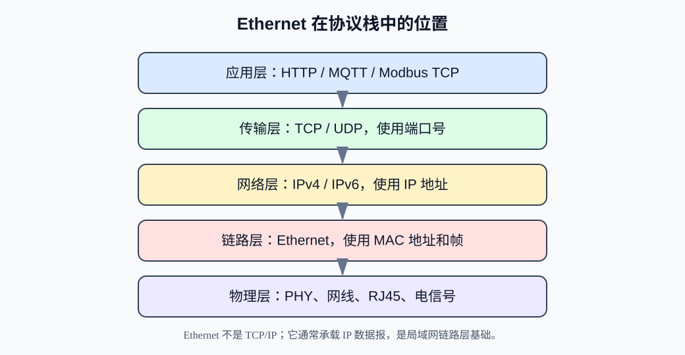
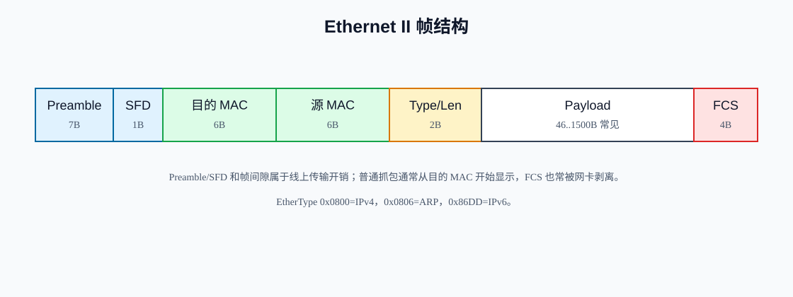
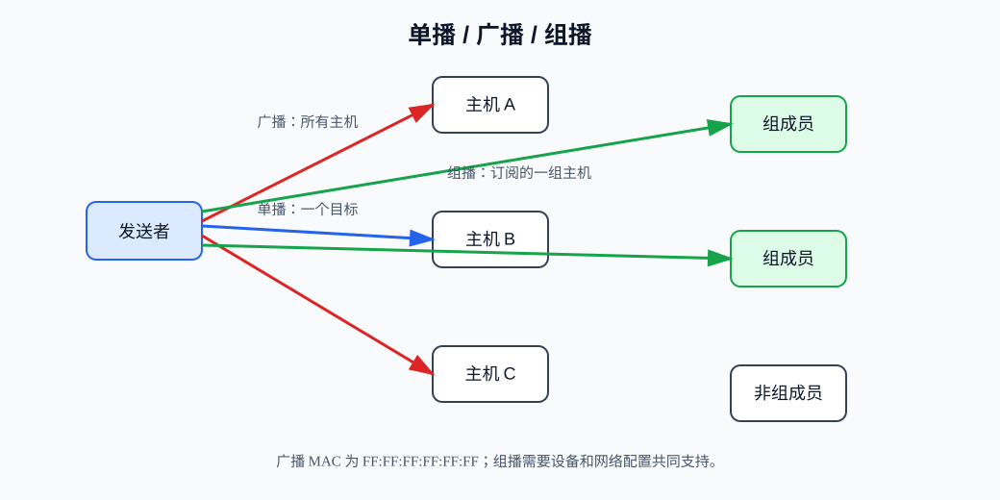
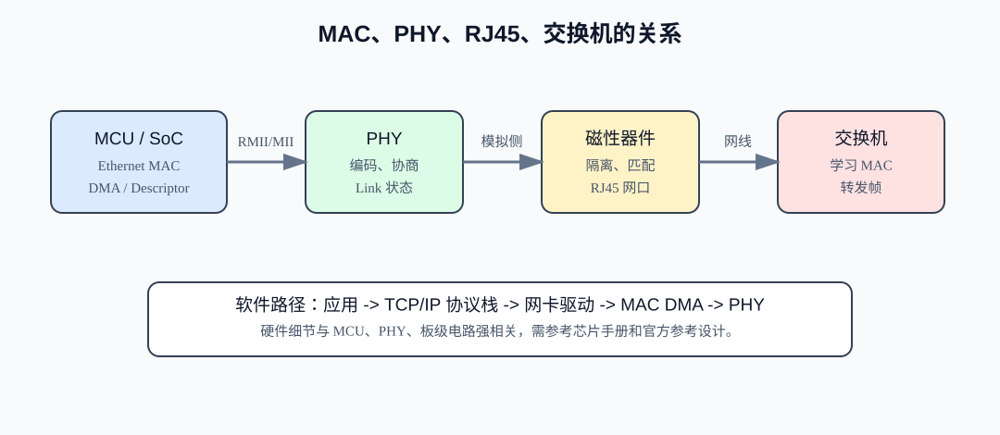
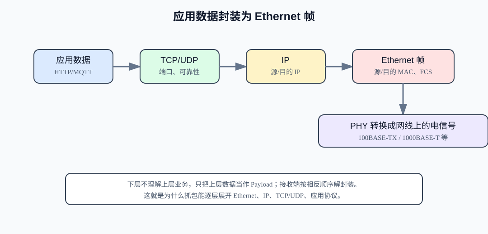

Ethernet¶
Ethernet，中文通常叫以太网，是今天最常见的局域网技术之一。家里的网线、办公室交换机、开发板上的 RJ45 网口、工业网关的 LAN 口，本质上大多都在使用以太网。
初学时可以先把 Ethernet 理解成：“在同一个局域网链路里，设备如何用网线或交换机把一帧数据送到另一台设备。”它主要解决的是本地链路上的成帧、寻址、介质访问和物理传输问题。至于跨网段路由、TCP 连接、HTTP 请求，那是更上层的 IP、TCP、UDP、HTTP 在做。
1. 以太网概述¶
以太网最早来自共享介质局域网，后来逐步发展为今天常见的交换式全双工网络。它覆盖了数据链路层和物理层的很多内容，包括：
- 以太网帧格式。
- MAC 地址。
- 介质访问方式。
- 速率与双工协商。
- 双绞线、光纤等物理介质。
- MAC 控制器、PHY、网口磁性器件、RJ45 等硬件连接。
在嵌入式系统中，以太网常用于：
- MCU 或 MPU 接入局域网。
- 工业控制器与上位机通信。
- Modbus TCP、MQTT、HTTP Server、OTA 升级。
- 摄像头、网关、数据采集设备。
- 本地调试、日志上传、远程配置。
以太网的优势是速度高、生态成熟、设备便宜、工具完善；缺点是硬件和协议栈复杂度明显高于 UART、I2C、SPI 这类板级通信。
2. 以太网在网络分层中的位置¶
Ethernet 不是 TCP/IP。它通常位于链路层和物理层，而 IP、TCP、UDP、HTTP 位于更高层。

可以这样理解：
| 层次 | 常见协议或技术 | 解决的问题 |
|---|---|---|
| 应用层 | HTTP、MQTT、Modbus TCP、自定义协议 | 应用数据含义。 |
| 传输层 | TCP、UDP | 端口、连接、可靠性或数据报。 |
| 网络层 | IPv4、IPv6、ICMP | IP 地址、路由、跨网段转发。 |
| 链路层 | Ethernet、ARP、VLAN | 本地链路成帧、MAC 地址、交换。 |
| 物理层 | 100BASE-TX、1000BASE-T、光纤 | 电信号、编码、线缆、连接器。 |
一台设备访问网页时，数据可能是：
HTTP 数据
-> TCP 报文段
-> IP 数据报
-> Ethernet 帧
-> 网线上的电信号
从这个角度看，Ethernet 是承载 IP 数据报的一种常见链路技术。
3. Ethernet 与 IP、TCP、UDP、HTTP 的关系¶
Ethernet、IP、TCP/UDP、HTTP 是不同层的协议或技术。
- Ethernet：负责同一局域网链路内一帧如何传输，使用 MAC 地址。
- IP：负责主机寻址和跨网络转发，使用 IP 地址。
- TCP/UDP：负责主机上进程之间的数据传输，使用端口号。
- HTTP：应用层协议，定义请求、响应、Header、Body 等应用语义。
例如电脑访问开发板上的网页：
浏览器访问 http://192.168.1.50/
HTTP: GET /
TCP: 目的端口 80
IP: 目的 IP 192.168.1.50
Ethernet: 目的 MAC = 开发板网口 MAC
如果目标 IP 在同一局域网，发送方需要知道目标 IP 对应的 MAC 地址，这通常由 ARP 完成。如果目标 IP 不在同一网段，发送方会把以太网帧发给默认网关的 MAC 地址，由网关继续转发 IP 数据报。
4. MAC 地址是什么¶
MAC 地址是链路层地址，通常写成 6 字节十六进制：
00:11:22:33:44:55
它用于以太网帧在本地链路中的投递。以太网帧头里有：
- 目的 MAC 地址。
- 源 MAC 地址。
MAC 地址和 IP 地址的区别：
| 项目 | MAC 地址 | IP 地址 |
|---|---|---|
| 层次 | 链路层 | 网络层 |
| 常见长度 | 48 bit | IPv4 32 bit，IPv6 128 bit |
| 作用范围 | 本地链路或二层网络 | 可跨网段路由 |
| 用途 | 交换机转发以太网帧 | 路由器转发 IP 数据报 |
| 示例 | 00:11:22:33:44:55 |
192.168.1.50 |
关键点：
- IP 地址像“最终目的地的网络地址”。
- MAC 地址像“当前这一段链路上下一跳的收件人”。
- IP 数据报跨路由器转发时，源/目的 IP 通常保持不变；但每一跳的以太网源/目的 MAC 会变化。
嵌入式设备要确保 MAC 地址唯一。多个设备使用同一个 MAC，会导致交换机学习表混乱、ARP 异常、通信时断时续。
5. 以太网帧结构详解¶
以太网在链路层传输的基本单位是 frame，帧。常见 Ethernet II 帧结构如下。

典型字段：
| 字段 | 长度 | 说明 |
|---|---|---|
| Preamble | 7 字节 | 前导码，用于接收端时钟同步。 |
| SFD | 1 字节 | Start Frame Delimiter，帧起始定界符。 |
| Destination MAC | 6 字节 | 目的 MAC 地址。 |
| Source MAC | 6 字节 | 源 MAC 地址。 |
| Type/Length | 2 字节 | Ethernet II 中通常表示上层协议类型；部分格式表示长度。 |
| Payload | 46 到 1500 字节 | 上层数据，如 IP 数据报、ARP 报文。 |
| FCS | 4 字节 | Frame Check Sequence，CRC 校验。 |
5.1 源 MAC 与目的 MAC¶
目的 MAC 表示这一帧要交给谁。常见情况：
- 单播：目的 MAC 是某一台设备。
- 广播：目的 MAC 是
FF:FF:FF:FF:FF:FF。 - 组播：目的 MAC 是某一组设备共同监听的地址。
源 MAC 表示这一帧是谁发出的。交换机会根据源 MAC 学习“这个 MAC 在哪个端口后面”。
5.2 Type/Length¶
该字段有两种常见解释：
- 值大于等于
0x0600时，通常作为 EtherType，表示 Payload 类型。 - 值小于等于
1500时，通常表示 Payload 长度。
常见 EtherType：
| EtherType | 含义 |
|---|---|
0x0800 |
IPv4 |
0x0806 |
ARP |
0x86DD |
IPv6 |
0x8100 |
802.1Q VLAN Tag |
5.3 Payload¶
Payload 是以太网帧承载的上层数据。常见是 IP 数据报或 ARP 报文。
普通以太网 MTU 常说 1500 字节，通常指 IP 层可放入以太网 Payload 的最大大小，不包含以太网头和 FCS。实际线上的物理开销还包括前导码、SFD、帧间隙等。
5.4 FCS¶
FCS 是帧校验序列，通常是 CRC-32。网卡或 MAC 硬件会自动生成和检查 FCS。
软件抓包时通常看不到 FCS，因为很多网卡在交给操作系统前已经剥离 FCS。某些专业网卡或特殊驱动可以捕获 FCS，但这不是普通开发环境的默认行为。
6. 常见速率：10M / 100M / 1G¶
以太网有很多速率标准。嵌入式设备中最常见的是：
| 常见名称 | 标准习惯写法 | 典型介质 | 说明 |
|---|---|---|---|
| 10M Ethernet | 10BASE-T | 双绞线 | 早期低速以太网。 |
| 100M Fast Ethernet | 100BASE-TX | 双绞线 | MCU 以太网常见速率。 |
| 1G Gigabit Ethernet | 1000BASE-T | 双绞线 | MPU、Linux 网关、摄像头常见。 |
| 10G Ethernet | 10GBASE-T / 光纤系列 | 铜缆或光纤 | 服务器和高速网络常见。 |
几个注意点：
100M通常指物理链路速率是 100 Mbit/s，不等于应用层吞吐能达到 100 Mbit/s。- 实际吞吐会受协议头、帧间隙、CPU、DMA、缓存、协议栈、应用处理能力影响。
- 开发板支持 100M，需要 MCU MAC、PHY、磁性器件、布线、驱动和协议栈都正确。
- 两端设备通常通过自动协商决定最终速率和双工模式。
7. 半双工、全双工与 CSMA/CD¶
7.1 半双工¶
半双工表示同一时刻只能发送或接收，不能同时进行。早期共享介质以太网和集线器环境中，多个设备共享同一冲突域，可能发生碰撞。
7.2 全双工¶
全双工表示同一时刻可以同时发送和接收。现代交换式以太网基本都是全双工点对点链路：
设备网口 <-> 交换机端口
这种情况下，每条链路只有两个端点，冲突不再像早期共享总线那样存在。
7.3 CSMA/CD 的历史意义¶
CSMA/CD 是 Carrier Sense Multiple Access with Collision Detection，载波侦听多路访问/碰撞检测。它用于早期共享介质半双工以太网中：
- 发送前先听总线是否空闲。
- 空闲则发送。
- 如果检测到碰撞，停止发送。
- 随机退避后重试。
现实意义：
- 在学习以太网历史和标准时仍会看到 CSMA/CD。
- 在现代交换式全双工以太网中，CSMA/CD 基本不再影响日常通信。
- 如果设备被错误协商成半双工，仍可能出现碰撞、吞吐低、丢包等问题。
所以，CSMA/CD 不是没用的概念，但它对现代全双工交换网络的实际影响已经远小于早期共享介质时代。
8. 交换机的作用¶
交换机主要工作在二层，也就是链路层。它根据 MAC 地址转发以太网帧。
基本工作方式：
- 交换机从某端口收到一帧。
- 读取源 MAC，学习“这个 MAC 在这个端口后面”。
- 查看目的 MAC。
- 如果目的 MAC 已知，只转发到对应端口。
- 如果目的 MAC 未知，可能向除入口外的其他端口泛洪。
- 广播帧会转发到同一广播域内的所有相关端口。
交换机不主要根据 IP 地址转发普通二层帧。三层交换机或路由器才会根据 IP 路由做三层转发。
常见误区：
- 交换机不是简单“把所有线接在一起”的集线器。
- 交换机会学习 MAC 地址表。
- 普通二层交换机看 MAC，不看 TCP 端口。
- VLAN 会把二层广播域进一步划分。
9. 广播、单播、组播¶

9.1 单播 Unicast¶
单播是一个发送者发给一个接收者。目的 MAC 是某个设备的唯一 MAC。
常见例子：
- PC 向开发板发送 TCP 数据。
- 网关向某台服务器发送数据。
9.2 广播 Broadcast¶
广播是发给同一广播域内所有设备。以太网广播 MAC 是：
FF:FF:FF:FF:FF:FF
常见例子：
- ARP Request。
- DHCP Discover。
广播很方便，但不能滥用。广播太多会占用整个广播域内所有设备的处理资源。
9.3 组播 Multicast¶
组播是发给一组感兴趣的设备。以太网组播地址有特定范围，上层常与 IPv4/IPv6 组播配合。
常见例子：
- IPv6 邻居发现。
- mDNS。
- 某些视频或工业发现协议。
组播比广播更精准，但交换机是否能优化组播转发，取决于 IGMP Snooping、MLD Snooping 等机制和网络设备配置。
10. ARP 与以太网的关系¶
ARP 是 Address Resolution Protocol，地址解析协议。它用于 IPv4 局域网中，把 IP 地址解析成 MAC 地址。
典型过程：
主机 A 想发给 192.168.1.50
但不知道 192.168.1.50 的 MAC
A 发送 ARP Request:
谁是 192.168.1.50？请告诉 192.168.1.20
目标设备回复 ARP Reply:
192.168.1.50 在 00:11:22:33:44:55
ARP Request 通常是以太网广播帧，ARP Reply 通常是单播帧。
抓包排查以太网通信时，ARP 很关键：
- 没有 ARP Request：可能 IP 栈没发包、路由判断有问题、网卡没工作。
- 有 ARP Request 没 Reply：目标不在线、IP 错、线缆/交换机问题、防火墙或设备未响应。
- ARP Reply 的 MAC 变化异常：可能 IP 冲突或 ARP 欺骗。
IPv6 不使用 ARP，而使用 Neighbor Discovery Protocol，基于 ICMPv6。
11. MTU 的概念¶
MTU 是 Maximum Transmission Unit，最大传输单元。普通以太网 MTU 通常是 1500 字节，表示链路层 Payload 中可承载的最大三层数据大小，常见就是最大 IP 数据报大小。
如果 IP 数据报超过路径 MTU，可能出现：
- IPv4 分片。
- 设置 DF 标志时被丢弃，并返回 ICMP Fragmentation Needed。
- IPv6 中由源主机处理分片，路由器不分片。
工程影响：
- UDP 数据报太大可能导致 IP 分片，任一分片丢失都会导致整个 UDP 数据报不可用。
- TCP 会通过 MSS 等机制尽量避免发送超过路径 MTU 的段。
- VPN、隧道、PPPoE 会减少有效 MTU，可能导致某些网站或协议异常。
- 嵌入式设备接收缓冲区要考虑 MTU 和协议头开销。
常见调试：
ping 192.168.1.50 -f -l 1472
在 IPv4 + ICMP 场景中，1472 字节 ICMP payload 加上 20 字节 IP 头和 8 字节 ICMP 头，刚好对应 1500 MTU。不同系统命令参数略有差异。
12. 网线、PHY、MAC 的基本关系¶
以太网硬件经常出现几个关键词：MAC、PHY、磁性器件、RJ45、交换机。

12.1 MAC 控制器¶
MAC 控制器通常在 MCU、MPU 或 SoC 内部，负责：
- 以太网帧收发。
- MAC 地址过滤。
- DMA 描述符管理。
- FCS 生成和检查。
- 与协议栈交换帧数据。
12.2 PHY¶
PHY 是物理层收发器，负责：
- 物理编码和解码。
- 模拟信号收发。
- 自动协商速率和双工。
- 链路状态检测。
- 与网线侧的电气接口。
MAC 和 PHY 之间常见接口：
- MII。
- RMII。
- RGMII。
- SGMII。
具体使用哪种接口取决于 MCU/MPU、PHY 芯片和速率要求。
12.3 RJ45 与磁性器件¶
RJ45 是常见网口连接器。实际网口电路通常还包括网络变压器或集成磁性器件，用于隔离、阻抗匹配和抗干扰。
有些 RJ45 带集成变压器和 LED，有些需要外置磁性器件。设计时必须参考 PHY 数据手册和参考设计。
13. 嵌入式设备中 Ethernet 的典型架构¶
一个典型 MCU 以太网系统可能是：
应用任务
-> socket / lwIP API
-> TCP/IP 协议栈
-> Ethernet netif
-> MAC DMA
-> RMII/MII
-> PHY
-> 磁性器件 / RJ45
-> 网线 / 交换机
软件部分常见模块：
- 网卡驱动。
- DMA 描述符和收发缓冲区。
- 协议栈，如 lwIP、FreeRTOS+TCP、Linux TCP/IP。
- DHCP、DNS、TCP、UDP、HTTP、MQTT 等。
- 应用任务。
硬件和 BSP 需要关注：
- PHY 地址配置。
- RMII/MII 引脚复用。
- 50 MHz RMII 时钟来源。
- PHY 复位时序。
- MDC/MDIO 管理接口。
- DMA 缓冲区地址对齐和 cache 一致性。
- MAC 地址来源，不能所有设备都用同一个默认值。
这些实现方式与设备平台强相关。STM32、NXP、ESP32、Linux MPU、国产 MCU 的 Ethernet 外设和驱动细节可能差异很大，应以芯片参考手册、评估板原理图和官方驱动为准。
14. 数据逐层封装到 Ethernet 帧¶

以 HTTP over TCP over IPv4 over Ethernet 为例：
- 应用层生成 HTTP 请求。
- TCP 加上源端口、目的端口、序号、ACK 等，形成 TCP 段。
- IP 加上源 IP、目的 IP、TTL、Protocol 等，形成 IP 数据报。
- Ethernet 加上源 MAC、目的 MAC、EtherType 和 FCS，形成以太网帧。
- PHY 把帧转换成物理信号发送到网线。
接收端则反向解封装：
- PHY 收到信号。
- MAC 检查 FCS 和目的 MAC。
- IP 层检查目的 IP。
- TCP/UDP 根据端口交给对应 socket。
- 应用读取数据。
15. 抓包与调试方法¶
15.1 Wireshark¶
Wireshark 是学习以太网非常重要的工具。它能看到：
- Ethernet 源/目的 MAC。
- EtherType。
- ARP。
- IPv4/IPv6。
- TCP/UDP。
- 应用层协议。
常用过滤器：
eth.addr == 00:11:22:33:44:55
eth.dst == ff:ff:ff:ff:ff:ff
arp
ip.addr == 192.168.1.50
tcp.port == 80
udp.port == 5353
15.2 ping 与 ARP 表¶
Windows：
ping 192.168.1.50
arp -a
ipconfig /all
Linux：
ping 192.168.1.50
ip neigh
ip addr
ethtool eth0
排查顺序：
- 看网口 Link LED 是否亮。
- 看本机 IP、掩码、网关是否正确。
- ping 目标 IP。
- 查看 ARP 表是否解析到目标 MAC。
- Wireshark 抓 ARP 和 ICMP。
- 再检查 TCP/UDP 端口和应用协议。
15.3 交换机与镜像端口¶
交换机不会把所有单播流量都发给你的电脑。因此想抓设备和服务器之间的流量时，需要：
- 使用交换机端口镜像。
- 使用网络 TAP。
- 把 PC 放在通信路径中做桥接抓包。
- 在设备或服务器本机抓包。
初学者常见误会是：插在同一交换机上就能抓到所有流量。现代交换机不是集线器，通常只能看到本机相关流量、广播、组播和未知单播泛洪。
16. 常见问题与排障思路¶
16.1 物理链路不通¶
现象：
- 网口灯不亮。
- 系统显示 link down。
- PHY 状态寄存器显示未连接。
可能原因：
- 网线损坏。
- RJ45 或磁性器件焊接问题。
- PHY 供电或复位异常。
- RMII/MII 时钟错误。
- PHY 地址配置错误。
- 交换机端口禁用。
16.2 有 Link 但 ping 不通¶
可能原因：
- IP 地址不在同一网段。
- 子网掩码错误。
- 网关配置错误。
- MAC 地址冲突。
- ARP 无响应。
- 防火墙阻止 ICMP。
- 设备协议栈未启动或任务卡死。
16.3 ARP 异常¶
现象：
- ARP 表里 MAC 来回变化。
- 同一个 IP 对应多个 MAC。
- ping 偶尔通偶尔不通。
可能原因：
- IP 冲突。
- MAC 地址重复。
- 设备重启后没有正确发送 Gratuitous ARP。
- 网络中存在异常代理 ARP 或安全设备。
16.4 TCP 连接失败¶
以太网链路正常不代表 TCP 服务正常。
继续检查：
- 目标 IP 是否可达。
- 目标端口是否监听。
- 防火墙是否拦截。
- 设备是否发出 SYN。
- 对端是否回复 SYN/ACK 或 RST。
- 应用是否 accept 或读取数据。
16.5 吞吐低或丢包¶
可能原因：
- 速率/双工协商异常。
- 线缆质量差。
- 交换机端口错误统计增加。
- MCU DMA 缓冲区不足。
- cache 一致性处理错误。
- 协议栈任务优先级太低。
- 应用处理太慢导致接收队列溢出。
- 大包超过 MTU 导致分片或丢弃。
17. 与串口、CAN、Wi-Fi 的简要对比¶
| 项目 | Ethernet | UART/串口 | CAN | Wi-Fi |
|---|---|---|---|---|
| 典型介质 | 网线、光纤 | TX/RX 线 | CAN_H/CAN_L | 无线 |
| 地址 | MAC 地址，常承载 IP | 通常无标准地址 | CAN ID | MAC 地址，常承载 IP |
| 拓扑 | 交换机星型为主 | 点对点常见 | 总线 | AP/STA 无线网络 |
| 速率 | 10M、100M、1G 等 | 从几千到数 Mbps | Classical CAN 到 1 Mbps | 取决于标准和环境 |
| 是否常承载 TCP/IP | 是 | 通常不直接承载 | 通常不直接承载 | 是 |
| 调试工具 | Wireshark、交换机镜像 | 串口助手、逻辑分析仪 | CAN 分析仪 | Wireshark、无线抓包 |
| 典型场景 | 局域网、工业网关、上位机通信 | 调试、模块通信 | 车载、工业控制 | 移动和无线接入 |
对嵌入式初学者来说：
- 串口更像“直接收发字节”。
- CAN 更像“本地总线上的消息仲裁”。
- Ethernet 更像“局域网帧传输基础”，通常承载 IP/TCP/UDP。
- Wi-Fi 在网络层以上和 Ethernet 类似，也常承载 IP，但底层无线接入机制完全不同。
18. 工程实践建议¶
18.1 硬件设计¶
- PHY 参考设计不要随意改。
- 注意差分线阻抗、长度匹配和布线层叠。
- 确认 RJ45 磁性器件型号和接法。
- RMII 的 50 MHz 时钟要稳定。
- 预留 PHY 复位、地址配置和 LED 调试点。
- 考虑 ESD、防雷、浪涌和隔离要求。
18.2 软件设计¶
- MAC 地址必须唯一，可以来自 EEPROM、OTP、芯片唯一 ID 派生或生产烧录。
- 启动时先检查 link up，再启动 DHCP 或业务连接。
- 记录 link up/down 事件。
- 提供静态 IP 和 DHCP 两种配置方式。
- 设计网络参数恢复默认机制，避免设备配错 IP 后失联。
- 对 TCP/UDP 错误做分类日志，不要只输出“网络失败”。
18.3 调试建议¶
- 先抓 ARP，再抓 IP，再抓 TCP/UDP，再看应用层。
- 先确认同网段直连通信，再接入复杂网络。
- 保留固件侧统计：收包数、发包数、丢包数、DMA 错误、link 状态。
- 吞吐测试和功能测试分开做。
- 对低端 MCU，不要用桌面网络吞吐标准要求它。
19. 常见误区¶
19.1 Ethernet 就是 TCP/IP¶
不是。Ethernet 是链路层/物理层技术，TCP/IP 是网络层和传输层协议族。TCP/IP 可以运行在 Ethernet 上，也可以运行在 Wi-Fi、PPP 等其他链路上。
19.2 MAC 地址和 IP 地址是一回事¶
不是。MAC 地址用于本地链路帧转发，IP 地址用于网络层寻址和路由。跨路由器时，每一跳 MAC 会变化，但 IP 地址通常保持端到端语义。
19.3 交换机主要看 IP¶
普通二层交换机主要看 MAC 地址。路由器或三层交换机才根据 IP 路由转发三层数据。
19.4 CSMA/CD 仍然决定现代以太网性能¶
大多数现代以太网是交换式全双工链路，已经没有早期共享介质那样的碰撞域。CSMA/CD 有历史和标准学习价值，但日常性能问题更多来自链路质量、协商、交换机、协议栈和应用处理。
19.5 ping 通就说明应用没问题¶
ping 通只说明 IP/ICMP 层面大致可达。TCP 端口、UDP 服务、应用协议、认证、超时、数据格式都可能仍然有问题。
20. 学习路线¶
建议按下面顺序练习：
- 用一台 PC 和开发板直连或接同一交换机。
- 配置同网段静态 IP，观察网口 Link LED。
- 用
ping测试 IP 可达。 - 用
arp -a或ip neigh查看 IP 到 MAC 的映射。 - 用 Wireshark 抓 ARP、ICMP、TCP。
- 分析一帧 Ethernet II 帧的目的 MAC、源 MAC、EtherType。
- 跑一个 TCP Server 或 HTTP Server，观察数据如何封装。
- 在嵌入式工程中查看 PHY 寄存器、DMA 描述符和协议栈统计。